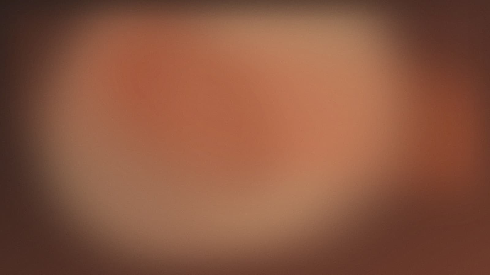
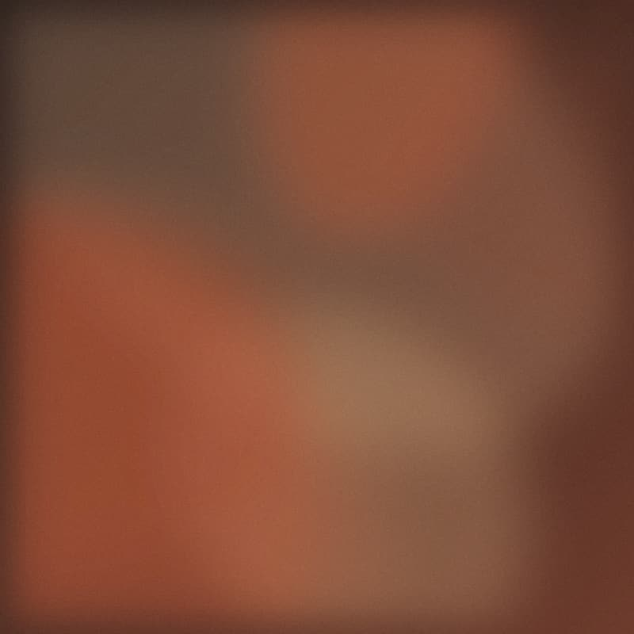
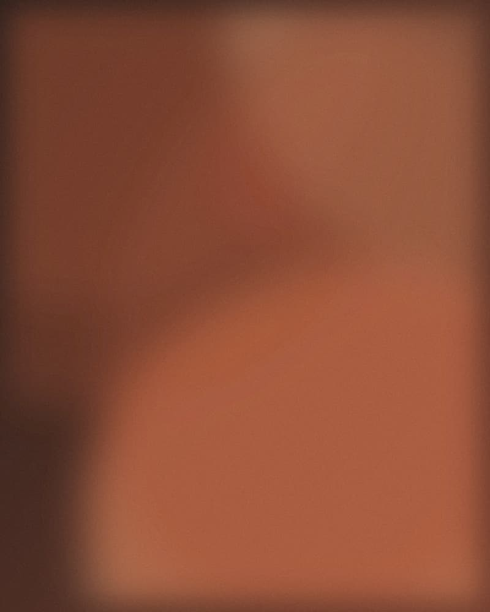

Terrine de campagne
Cochon fermier du Forez, pistaches, cornichons maison.
9 €

Lyon 7ᵉ · Halles Paul Bocuse
Nous cuisinons ce que les producteurs nous apportent le jour même. C'est pourquoi l'ardoise change toutes les semaines, et parfois en cours de service.
Quatre assiettes qui reviennent souvent, quand la saison le permet.
Cochon fermier du Forez, pistaches, cornichons maison.
9 €
Sauce Nantua, écrevisses de la Dombes, riz pilaf.
22 €
Rôtie au sautoir, jus corsé, gratin de cardons.
28 €

Pâte sablée, pralines de Saint-Genix, crème fraîche d'Échirolles.
8 €
Marie Delaunay a repris le comptoir après quinze ans en cuisine à Vienne et à Lyon. Elle travaille avec une dizaine de producteurs, tous à moins de cent kilomètres, et refuse d'allonger la carte pour ne servir que ce qui est bon ce jour-là.
La salle compte trente-deux couverts. Nous ne prenons pas de groupes de plus de huit personnes le week-end, faute de place en cuisine.

102 cours Lafayette, 69003 Lyon
Halles Paul Bocuse, allée centrale